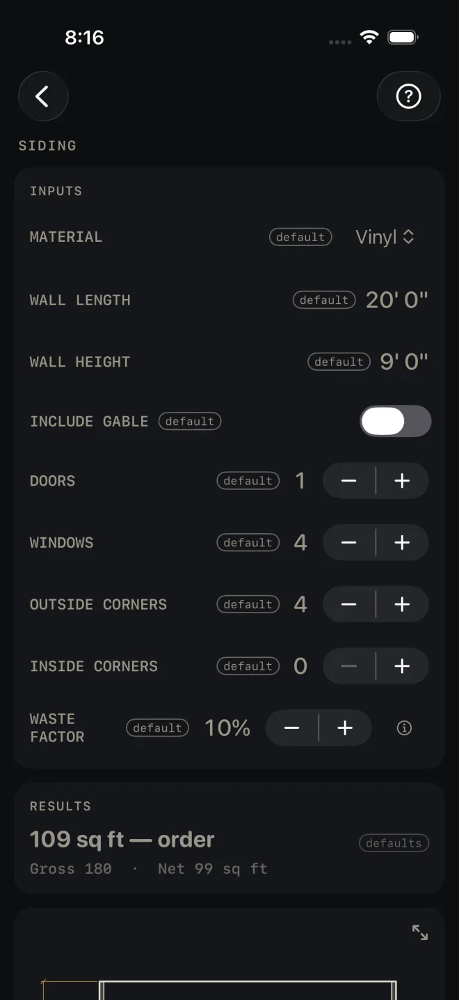
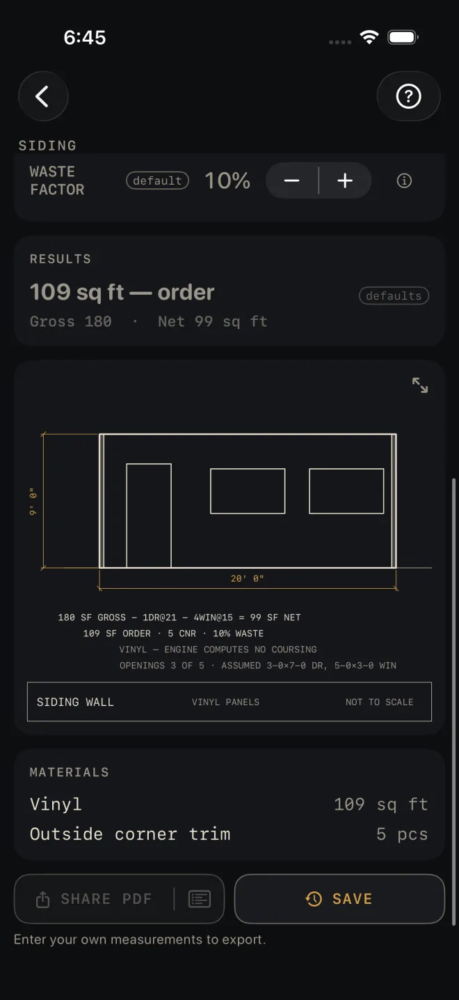

Siding
What it's for
Takes off siding for a wall and, if there is one, the gable over it. For vinyl and board and batten you get square feet to order. For fiber cement and clapboard you get lineal feet of board, the course count and the exposure. Corner trim is counted, and the wall is drawn with its openings. It is an order takeoff. It makes no code check.
Step by step
The example is the screen as it opens: vinyl on a wall 20' 0" long and 9' 0" high, one door, four windows, four outside corners, 10% waste.

1 2 3 4 5- Pick MATERIAL: Vinyl, Fiber Cement, Clapboard or Board & Batten. Fiber Cement and Clapboard are figured in courses, so an EXPOSURE row appears for them: how much of each board shows once the next one laps it. Vinyl and Board & Batten are figured by area and have no exposure row.
- Enter WALL LENGTH and WALL HEIGHT, from the bottom of the first course to the top of the wall. The screen takes one wall. For a whole house at one height, enter the total run of wall.
- Turn on INCLUDE GABLE to add one gable triangle. Two rows appear: GABLE BASE, across the bottom of the triangle, and GABLE PEAK HEIGHT, measured plumb from that base line to the peak.
- Set DOORS and WINDOWS. Each takes a fixed allowance off the area. The screen does not ask for opening sizes.
- Set OUTSIDE CORNERS and INSIDE CORNERS. Each corner buys one piece of corner trim.
- Set WASTE FACTOR. It is added to the siding and to the corner trim count.
Reading the results

7 10 11 12- The headline is what to order, waste included. For Vinyl and Board & Batten it is square feet; on the defaults, 109 sq ft — order. For Fiber Cement and Clapboard it is lineal feet of board.
- Gross and net. Gross is wall plus gable. Net is gross less the door and window allowances. On the defaults: Gross 180 · Net 99 sq ft. With a gable on, its area is added to the line.
- Courses and exposure show for Fiber Cement and Clapboard only: the course count, the board size the exposure calls for, the exposure actually used, and the lineal feet of boards. If the exposure shown is smaller than the one you entered, the calculator has held it to the most that board size can show. For those two materials a BASIS & WHAT WAS ASSUMED row also appears. Tap it to read how the boards were counted: courses at the wall's height times its length, and the gable at its area divided by the exposure.
- The drawing is an elevation of the wall with its openings. Pinch to zoom, drag to pan, double-tap to reset, and use the expand button for full screen. See Drawings.
- The notes under the drawing are where you check what was assumed. The first line is the area sum with the allowance for each opening, here 1DR@21 − 4WIN@15, and the last line gives the opening sizes those allowances stand for. It also tells you when not every opening fits on the picture, here OPENINGS 3 OF 5. All five are still deducted.
- MATERIALS lists the siding in its order unit and the corner trim in pieces. Four outside corners at 10% waste come to 5 pcs on the defaults.
There are no red flags on this screen. Nothing here is a pass or a fail.
Siding is a Pro calculator. SHARE PDF and SAVE are Pro as
well, a one-time purchase. SHARE PDF and the list icon at its right end stay dim until you have entered your own
measurements. SAVE stays lit, but until then a tap only answers Enter your job's numbers first
and saves nothing.
Common mistakes
- Expecting a big opening to come off in full. A patio door is one DOORS count, the same allowance as an entry door. Read the last note under the drawing for the sizes assumed.
- Counting on the door and window allowances to cut the board order. They come off the net area. For Fiber Cement and Clapboard the lineal feet are figured on full courses across the whole wall, so the openings do not reduce them.
- Entering the board width as EXPOSURE. Exposure is the part left showing, board width less the lap.
- Ordering corner trim by the piece count on a tall wall. The count is one piece per corner. Check the stock length against your WALL HEIGHT.
Related
- Roofing
- Trim
- Paint
- Drawings
- Cut sheets and templates — what SHARE PDF sends
- Saving and history